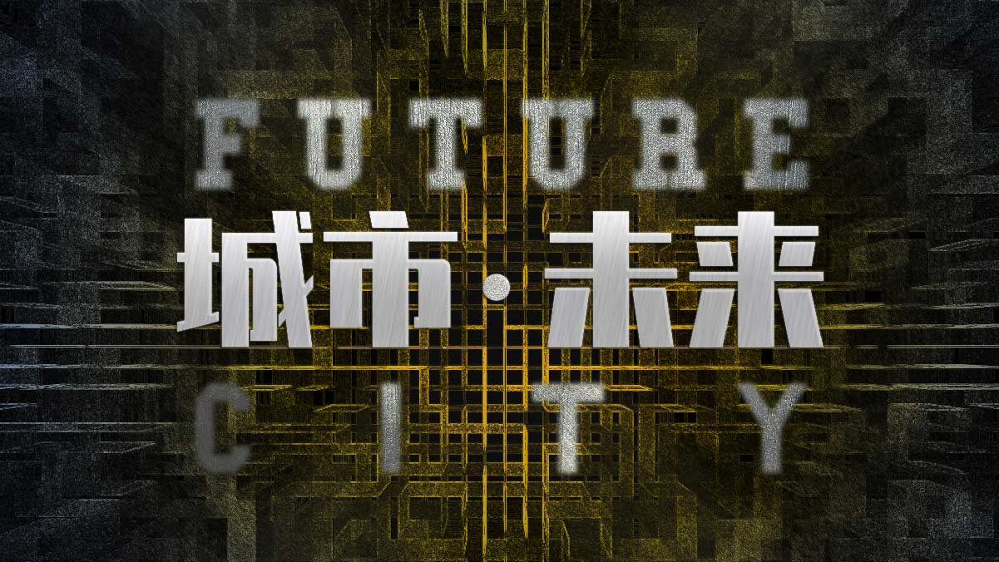
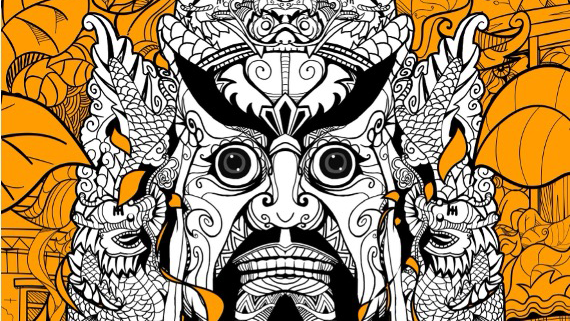

Former Executive Producer at Zhilu Media and Operations Manager at CCTV.COM. Synthesizing commercial leadership, spatial visual engineering, and emerging AI workflows for global brands and creative enterprises.
Click any project to launch its interactive Web-based Pitch Deck detailing strategy, architecture, and ROI.

Led spatial narrative & rendering pipeline for CUC XR Lab's 122m² 5-fold LED system. Re-engineered 8K-to-5K rendering output and deployed at CIFTIS (服贸会) & Beijing Urban Construction Group.
Project Leader for a landmark cultural tourism 5D immersive flight-experience film in Pingxiang City. Coordinated multi-disciplinary teams across motion sync and visual narrative.
Directed brand strategy for enterprise clients and state-owned entities at Zhilu Media & CCTV.COM. Built cross-platform short video content engines and crisis communication protocols.
Integration of generative AI tools into video production, concept design, and localized storyboards. Combining deep storytelling experience with state-of-the-art AI productivity.
Investigated virtual reality applications, haptic visual perception, and experiential branding.

Analyzed spatial cultural assets and policy mechanics driving digital media development.
Exploring multi-modal AI workflows and spatial computing in modern brand narratives.
Awarded for 'Urban · Future' Immersive Video Track.
Immersive Naked-Eye 3D Category for LED CAVE System.
LED Five-Fold Screen CAVE Immersive System Innovation.
Recognized for CCTV Online Lecture Hall Educational Video Series.
I am an experienced media strategist and executive producer with extensive leadership experience spanning CCTV.COM, Beijing Zhilu Media, and high-tech spatial visualization. Graduated with an MBA from Communication University of China (CUC), I am currently pursuing my Master of Communication Studies (Media Innovation) at Auckland University of Technology (AUT) in New Zealand.
Auckland, New Zealand · Available for Global Roles
Currently based in Auckland, New Zealand. Open to media production, digital strategy consulting, brand transformation, and communication research roles.
An interactive tool gathering offline English exchange events, language cafes, and community meetups across Auckland.
A specialized web tool helping master academic vocabulary, sentence structures, and speaking prompts tailored for IELTS preparation.
More fun, creative, and interactive web tools are currently in development. Stay tuned!